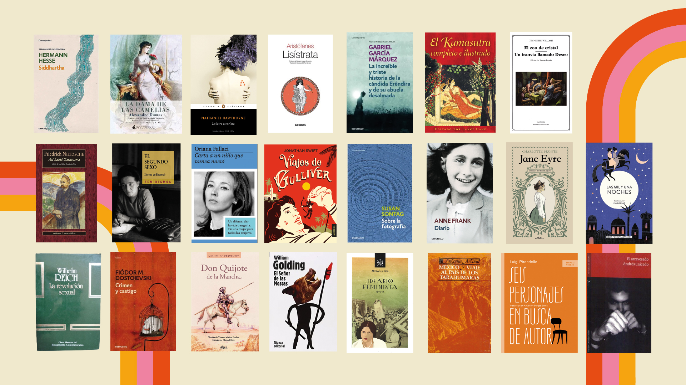
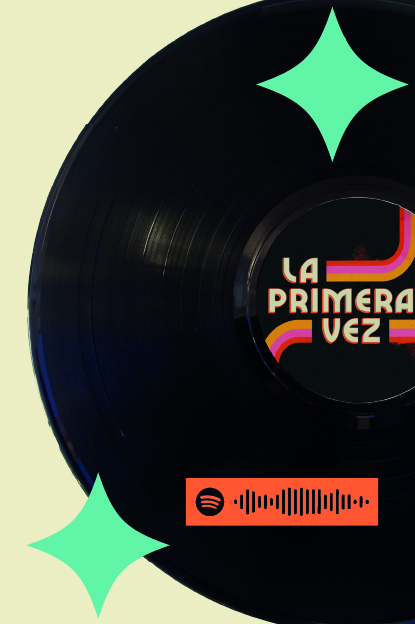

El arte También es revolución
Uno de los aspectos más valiosos de la serie es el destacado uso de la literatura y el arte a lo largo de su narrativa. En la mayoría de los capítulos, los títulos hacen referencia a obras literarias que se relacionan directamente con las situaciones que enfrentan los personajes y su entorno. A través de fragmentos de estos libros, la serie no solo aporta lecciones, sino que también ofrece herramientas para encontrar respuestas y explorar distintas perspectivas, proponiendo soluciones que, en muchos casos, resultan ser más revolucionarias que convencionales para el contexto social de la época en que es inspirada la serie.

Música
La serie no solo cuenta con una gran riqueza literaria, llena de referencias en la historia y de enseñanzas valiosas, sino también con una excelente selección musical. Las canciones de la época logran conectar perfectamente con la trama, aportando no solo estímulos visuales, sino también auditivos. Gracias a ello, revive temas que quizás conocíamos y habíamos dejado en el olvido, además de presentarnos nuevas canciones que fácilmente podrían convertirse en parte de nuestro día a día.
